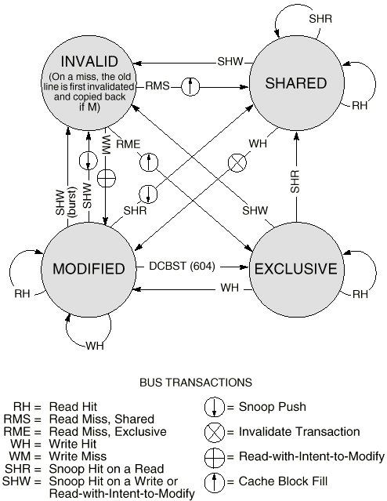
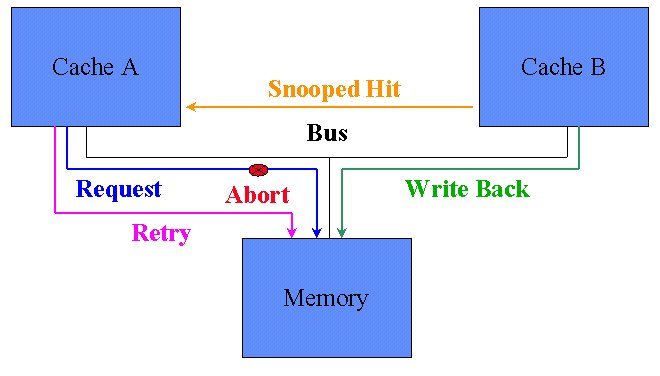
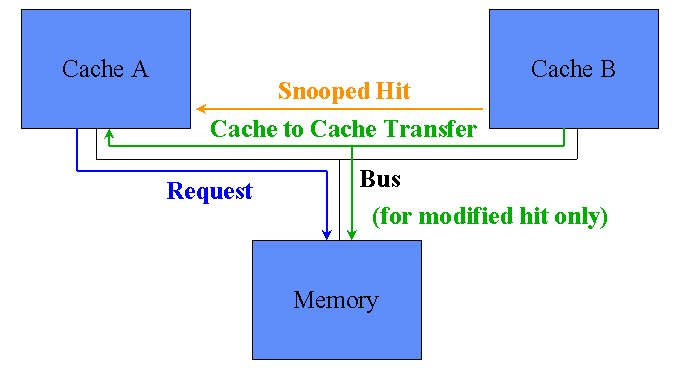
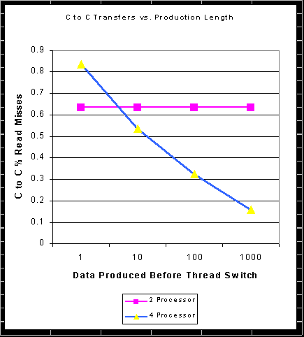
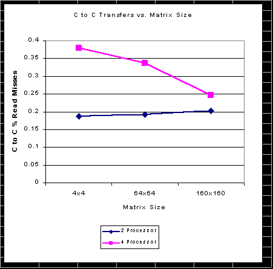

Robert Slater & Neal Tibrewala
Department of Electrical and Computer Engineering
Carnegie Mellon University
Term Project for 18-742
April 28, 1998
Abstract
There has been an increasing trend towards small n-way SMP systems running multithreaded programs and operating systems. These systems differ from larger vector processing machines in that they are still latency limited rather than bandwidth limited, especially when integrated onto a single multi-chip module. We feel there are cache optimizations that can be used to improve performance on these off-the-shelf SMP systems. Specifically, we believe that implementing cache-to-cache transfers on MESI coherence protocols will reduce miss latency, and multithreaded programs will benefit from this reduction because of the large amount of shared data between processors, in significantly improving performance. We will test this by instrumenting multi-threaded code that might be run on these systems, and running it through a multiple cache simulator in order to obtain statistics on shared data references. Then, using our knowledge of current bus configurations, we will generate timing models to show the improvement in performance. We found that actual performance gain is heavily dependent upon actual system specifications, but there are definite indications of improvement, up to 66% on some benchmarks. This implies that as the gap between main memory and multi-chip module latency increases this functionality can improve performance.
Two trends in computing are making cache coherency a more important issue in desktop computing. The first is the move towards supporting multiprocessor systems on-chip with current microprocessors. Processors such as the Pentium Pro/II, Power PC 603 and 604, and the Digital Alphas are being built to include symmetric multiprocessor (SMP) support, especially in the form of cache coherence hardware in the cache. These processors are being used in desktop systems that have two, four, or eight processors on the same memory bus, and therefore incur all the shared memory problems of traditional large multiprocessor systems. While the same solutions that worked for shared memory systems in the past will work on these new desktop systems as well, it has yet to be determined which are best suited to the task, and which solutions can be optimized to take advantage of the memory architecture of these systems.
The second trend is the movement towards multi-threaded applications. The main impetus is to allow multiple activities occurring on the processor on shared data without incurring the overhead associated with the separate memory spaces of different processes and operating system managed inter-process communication (IPC). Different applications, from web servers to multicast networks to multimedia to Java code, are all beginning to implement multithreading in order to take advantage of this property. On the proliferating desktop multiprocessor systems the additional benefit of being able to run these threads on separate processors can be realized, but only at the cost of implementing cache coherency. Given the nature of these applications to share data, it is only natural to examine the cache coherence protocols to find the ones best suited to the exchange of shared data between threads.
In our paper we will examine the common protocol used in these processors to support cache coherency, and look at an optimization that could have a large amount of payoff in the presence of a great deal of shared data. We produced some multithreaded code that operated on shared data to test the optimization, and ran the resultant data traces through a cache simulator in order to pick up references to shared data. Then, using those results, we examined probable system specifications for the near future, and extracted probable actual performance gains. Finally, we examine the reliability of our results and give some direction for future work.
There are two major types of cache coherency schemes. Directory based schemes rely on a central listing which keeps track of which data is in which caches. This is primarily used for large multiprocessor systems on which there are too many processors to share a single bus. The other class of cache coherence protocols is that of snoopy protocols[2], in which each cache monitors, or 'snoops', bus transactions to see if they address data currently in the cache, and they update the state of the data in order to make sure that the processor doesn't use any data which has been altered by another cache. These snoopy protocols are the ones that are being supported in current on-chip caches.
The particular protocol which has been implemented in most processors is the MESI protocol, named for the four states of the protocol: Modified, Exclusive, Shared, Invalid. The state of each line of the cache begins in Invalid, and each hit or miss or snooped transaction produces a transition to another state. The diagram below shows the transitions between the states of the protocol and explains what causes each change.

Diagram courtesy of Motorola [3]
An interesting feature of this is that the actual transition mechanisms are not specified for the protocol. This is where there is room for optimization while still retaining the essential features of the protocol. As an example of this, consider the snooped-hit-read transition from the modified state to the shared state. The data at that address must be transmitted to the other cache that produced the read, and both caches mark that address shared. This data can be transmitted directly from the cache containing the modified data to the requesting cache, requiring the protocol to allow a cache to take over responsibility for providing the data for that transaction. Alternatively, the cache containing the modified data can abort the transaction, allowing the cache with the modified data to write it back to system memory on the next bus transaction, and then the original requester re-arbitrates for the bus to get the data from system memory. The Pentium (R) II [2] implements the first sort of transition, while the PowerPC 604[1] implements the second form of the protocol.
The Illinois protocol [1] described by Papamarcos and Patel is a version of the MESI protocol that implements the cache-to-cache transfers that the Pentium II is designed for. These sort of cache-to-cache transfers result in a reduction of overhead for sharing of data at the cost of a more complex bus protocol. For the sorts of applications that we are looking at on desktop multiprocessor systems, this kind of drop in overhead seems particularly valuable, and since the price to be paid in bus complexity is primarily in terms of hardware complexity, it would seem to be a useful optimization to explore to determine if the cost is worth the improvement in performance.
The optimization we looked at, the cache-to-cache transfer is significant because the conditions for it to occur happen with great frequency when threads from multithreaded applications are run on separate processors of an SMP machine. The benchmarks in a later section show exactly how often. If this is the case with a particular applications then the global miss penalty can be reduced, resulting in better performance. Here is a detailed explanation of how this is accomplished by comparing the bus protocols of the PowerPC 604 [3] which does not implement this optimization, and the Pentium® II which does.
Snooped Read Hit, Without Cache-to-Cache Transfers

Cache B currently has a line of data in its cache. It has modified the data, but it has not been written back to main memory yet, so it is in the Modified state. Cache A now requests this data from the memory subsystem. Cache B detects (snoops) the address and checks its cache finding a hit. Since if the transaction were allowed to continue, Cache A would receive a stale copy of the data, Cache B asserts the address retry signal (ARTRY#) and the shared indicator signal (SHI#). This causes the transaction to immediately abort and to make all agents on the bus to hold off for one clock before requesting the bus again. During this one clock window, the cache which holds the modified data must gain access to the bus (winning arbitration because everyone else is holding off) and write back the data to system memory. After that transaction the data in cache B is set to Exclusive because it is unmodified, yet does not exist in any other cache. After that transaction completes, Cache A now re-arbitrates for the bus to request the line from system memory again. When it does cache B again snoops this read, but this time it just asserts the SHI# signal. The transaction completes as normal with the memory system supplying the data (and incurring the DRAM access latency and cycle time) but caches A and B both mark the line as being in the Shared state.
If cache B had the line in the Exclusive state instead of Modified state, then the ARTRY would not have been asserted. Cache B would merely assert SHI# to let Cache A know to put the line into a shared state, and the transfer would proceed from memory as normal.
Snooped Read Hit, With Cache-to-Cache Transfers

Now this is what happens in the Pentium® II [4]. Cache B again has a modified line. When Cache A makes a request from the memory controller, cache B snoops this address and sees it has a modified copy. Cache B asserts the hit-modified (HITM#) signal and the three agents involved now change roles. Cache A prepares to receive the data from the other cache and to mark it as Shared instead of exclusive, Cache B will take over responsibility of providing the data from the memory subsystem. It is will change the state of the line to Shared. Finally, the memory subsystem will switch from providing the data to buffering the incoming data from Cache B, and save it to be written back to DRAM when convenient. Since there may be a RAS/CAS delay before the DRAM can accept the data, or the DRAM could be otherwise busy, these buffers in the memory controller are necessary. However, those delays will not stall the processors waiting for the data in this scheme. If Cache B had the line in an exclusive instead of modified state, then there wouldn't be any write back required, and the HIT# signal would be asserted instead.
So how much savings is this? To compare let us assume that each system is running on a 100MHz 128-bit wide data bus. Let us also assume that cache blocks are 32 bytes long. Finally, let us say that it takes 1 clock for an L2 cache hit, and that we are using normal DRAM with an access time of 60ns. Finally let there be 1 clock to arbitrate for the bus, and one clock to put the address onto the address bus. Given these settings fetching 32 bytes from DRAM will take 1 clock arbitration, 1 clock address, 6 clocks to access the DRAM, and 2 clocks to transfer the data, for a total of 10 clocks. Fetching the same 32 bytes from another cache only takes 1 clock arbitration, 1 clock address, 1 clock access time, and 2 clocks to transfer the data, for a total of 5 clocks, fully half the time. For a modified line, the savings are even greater. 1 clock arbitration, 1 clock address, 1 to abort the transaction, 10 clocks to write back the data, then another 10 to get it back again from memory, a total of 23 clocks. We will revisit these numbers once we see from the results of the multithreaded benchmarks how often this condition occurs.
Much work has been done in creating standard benchmarks to measure CPU performance across all platforms. Before the advent of SMP and multithreading, single process, single threaded benchmarks were sufficient. However, because of the interactions between processors, memory systems, and programs sharing data and doing I/O in an SMP system, a single threaded benchmark is no longer a good indicator of true performance of a machine. As of this writing there are no standard benchmarks capable of measuring the performance of multi-threaded code running on SMP systems. This kind of performance measurement must take into account the effectiveness of the operating system in managing the threads, the memory system in handling simultaneous data requests, and the processor coherence scheme. As a result, for our data analysis we created code that simulates the kind of data access patterns real multithreaded code might use.
The code was written for the DECAlphastation using DEC threads. The machine is a single processor machine, so a true benchmark time elapsed could not be measured. To do so would require an SMP. However, these results are enough to show us how much the applications can be optimized just considering the caches and protocols. Further work should include an SMP simulator to take timings of the benchmarks running with and without the optimization.
The instrumentation tool used was ATOM modified to capture the thread ID of the running thread whenever it made a data access. However, this did not work because ATOM requires a static thread library compiled into the program before instrumenting, and not the shared one. The shared library would always return the ID of the ATOM procedure itself. According to The Guide to DECthreads [6] from the digital website, they will have a static version of the thread library in the next release of the operating system. To work around this, we copied and individually instrumented each thread as a separate procedure, which was doable on the simpler benchmarks, but nearly impossible on the more complicated ones listed below.
Finally, we attempted to modify Dinero to implement our notion of capturing shared data between threads to measure the effectiveness of cache to cache transfers. Unfortunately, because of the particular way Dinero manages its internal data structures it was not easy to modify. Instead we wrote our own multithreaded version of Dinero (a sub-set of features) which would handle any number threads, and configurable cache sizes and policies. It also shows us how many of the misses a program received could be optimized (i.e. the data existed in another cache). The program does not distinguish between reads and writes, but that feature is promised in next release of the program.
We configured the cache simulator to use a 5K 4-way set associate write-back cache with a 32byte block size. We found this is the common configuration for L2 caches (except that they are usually 512K instead of 5K) the smaller size was to allow us to have much smaller traces and still test the caches and optimization fairly and effectively. Having more lines in the cache would just improve the effectiveness of the optimization as the effectiveness of the cache grows, though it might grow at a different proportion.
This benchmark establishes the most well known kind of data sharing between processes, the server/client, or producer consumer relationship. There is a single producer thread generating data to be consumed by one or more consumer threads. To simulate I/O delays, system calls, and other thread interrupting effects (higher priority processes, for example) every thread waits a random amount of time (<10 us) before generating or consuming the next batch of data. The amount of data the producer created before sleeping is configurable and becomes a good control for keeping the threads in sync. If a small amount of data is produces then each thread will likely be caught up and stall waiting on data (and thus stay in sync, keeping a high temporal locality in cache) but if a large amount of data is created then each thread may sleep before it has finished and then the threads will diverge on which pieces of data they are consuming at the same time.
This benchmark splits up the task of doing a matrix multiply. It uses a blocking scheme to divide the task among several threads. This benchmark runs without interruption so it does not simulate I/O or other delays. Since the size of the matrix is configurable it provides a good way to control the spatial locality of the data each thread is working on. A small matrix will have each thread more likely to be working on data close together than a large matrix will.
Thanks to Yuan Chou, we did obtain a few other benchmarks like an JPEG decode, a fast Fourier transform, and a Parallel dense blocked LU factorization program. All of these would require a great deal of modification to work with the tools and workarounds we had. Some required conversion from C++ to C, and all of them would have to have every procedure duplicated for each thread run due to our instrumentation workaround. Future work should have these run through a working instrumentor and simulator.
|
Parameters |
Total Hits |
Un-optimizable Misses |
Optimizable Misses |
|
2 threads, 1 delta |
149992 |
10082 |
17450 |
|
2 threads, 10 delta |
149989 |
10077 |
17493 |
|
2 threads, 100 delta |
149983 |
10074 |
17481 |
|
2 threads, 1000 delta |
149991 |
10072 |
17457 |
|
4 threads, 1 delta |
288498 |
10071 |
52632 |
|
4 threads, 10 delta |
153087 |
19998 |
23010 |
|
4 threads, 100 delta |
140485 |
27203 |
13121 |
|
4 threads, 1000 delta |
135663 |
32521 |
6097 |

As you can see, in the two processor thread version, the optimization was able to catch about 65% of the cache misses with every delta. This is flat showing that the consumer thread was able to keep up with the producer thread, and consumed all the data before it went to sleep. The 4 thread version started out with a much higher degree of optimizable misses (83%) but that dropped off as the threads became out of sync with each other; the data was no longer in the other thread's caches. The number is higher than the 2 processor version because for each piece of data produced there are 3 times as many misses in the 4 thread version (3 consumers) and each of then is optimizable. Because of competition, and the fact that we were really running on a single processor, each thread couldn't consume the data before sleeping when the amount per time delta was large, so we see the drop off in share data between the caches. One should note though that had 4 processors really be running simultaneously, the 4 threads would be operating at the 1 time delta mark (well, 0 actually) and enjoy the higher figure.
|
Parameters |
Total Hits |
Un-optimizable Misses |
Optimizable Misses |
|
4x4 2-threads |
161 |
87 |
20 |
|
4x4 4-threads |
263 |
132 |
81 |
|
64x64 2-threads |
16852 |
121508 |
2051 |
|
64x64 4-threads |
16597 |
120467 |
3370 |
|
160x160 2-threads |
8343 |
255305 |
65063 |
|
160x160 4-threads |
6744 |
164872 |
53856 |

The matrix multiply benchmark had a smaller degree of shared data than the producer consumer, but it still is significant. This is to be expected because the matrix multiply should be operating on different parts of the matrix, yet there is still a great deal of coordination, and overlap within cache lines between the two threads to provide the performance. The 4 processor version had approximately 38% of missed which could be optimized which fell down to 25% for the larger matrix. The 2 thread version stayed approximately at 20% for all matrix sizes. We guess that the 20% figure is from mostly the synchronization code (including semaphore variables) shared between the threads. The 4 thread version will asymptote to this synchronization only value as matrix size increases.
Putting the numbers together we find that multithreaded applications can have between 25% to 85% of their cache misses reduced by this optimization. By combining this result with the bus and memory timings given before we see the following. The fully synched 4 threaded producer consumer benchmark had a miss rate of 15.5%. The 149,992 hits at one clock each, plus 17,450 optimizable misses at 5 clocks each, plus 10,082 unoptimizable misses at 10 clocks each, yield a total run time of 338,062 clocks verses 425312 unoptimized, a speedup of 25.8% in program execution time! This is not counting the extra latency saved when doing modified write backs (as the program did not distinguish writes) of course this does not time spend solely in the CPU and L1 cache, but if the machine is bus limited this won't be a factor. If we assume 30% of misses are due to writes (as should be the cache in this producer consumer 4 thread model since the producer is always giving out modified data) then this speedup doubles (the write back case has a 23 clock latency instead of just 10)
For a fair comparison, the speedup achieved by the worst performer, the 2 threaded matrix multiply is as follows. 161(1) + 87(5) + 20(10) = 796 clocks versus 161(1) + 107(10) = 1231 clocks. 64% speedup. This is actually higher than the producer consumer model because of the higher miss rate for a matrix multiply, namely 66%.
These benchmarks show that miss penalty is important for overall execution speed of many programs, especially multithreaded ones where bus bandwidth is at a premium due to multiple processors sharing a bus. As such it is very important for performance to have such cache-to-cache optimizations in the coherence protocol of SMP systems.
In examining our work and determining the actual performance gain of our optimization, we encountered two major vacancies in our work. The first was in terms of reliable benchmarks for multithreaded applications. While our own benchmarks are useful in examining the sorts of activity on shared data that we expect from multithreaded code, they in no way encompass the complexity of most of these applications. We also found that while our memory model allowed us to examine accesses to shared data and the sharing of that data between caches, it did not thoroughly couple this to the details of bus transactions or the timing of caches versus main memory. Both of these areas would be fertile ground for future research.
We feel the most is to be gained in the area of multithreaded benchmarks. While there has been a great deal of research into multiprocessor benchmarks, there has been little research into the sorts of multithreaded programs that are being run on today’s desktop systems. Most of the benchmarks we found that were somewhat applicable were multiprocessor benchmarks, or sometimes multiprocessor benchmarks that had been made multithreaded. In either case, it was evident that there were no good benchmarks to test performance for the kinds of programs which we were examining. A benchmark suite of this nature would be extremely useful, as we encountered many indications that such benchmarks were needed while conducting our own search.
We feel that an accurate memory model would be helpful for evaluating performance on these desktop symmetric multiprocessor systems. Our results examined primarily the existence of shared data among probable multithreaded programs. In order to determine actual performance gains, memory models such as those found in these systems need to be constructed and simulated. The details of bus transactions, memory speeds, and memory architectures are going to dictate the extent to which our optimization improves performance, and an examination into this area could provide further reasons to research this topic.
[1] M. Papamarcos and J. Patel, "A Low-Overhead Coherence Solution for Multiprocessors with Private Cache Memories," Proc. 11th ISCA, 1984 pp. 348-354.
This paper describes the Illinois protocol which was implemented for testing for our own paper. It examines the projected performance of that protocol and shows some test cases for multiprocessor applications for which the performance of the protocol was tested.[2] "Extending Snoopy Cache Coherence Protocols" Jeff Heid & Denis Reilly, ECE CMU 11/24/97
This paper examines a variety of snoopy cache coherence protocols and attempts to understand the behavior of each. Write-broadcast and write-invalidate schemes are both looked at, and extended in order to correct the weaknesses of each type of protocol. While the results are mixed, it does provide some valuable insight into snoopy protocols, and the Illinois protocol in particular.[3] "PowerPCtm Microprocessor Family: The Bus Interface for 32-Bit Microprocessors," Motorola, 1997 pp.(4-1)-(4-20)
This document details the PowerPC Bus Interface, and in the process describes the signals and sequences of events that occur on a snooped hit read to modified data in multiprocessor systems. It was from this document that we gained an understanding of the abort-retry response to this event.[4] "Pentium® II Processor Developer’s Manual," Intel, 1997 pp. (3-1)-(3-10).
This document describes the operation of the Pentium II, and in particular describes the cache operation in a multiprocessor environment. It was from this document that we acquired an understanding of the operation of the cache-to-cache transfer upon a snooped hit read to modified data.
[5] P. Stenström, "A Survey of Cache Coherence Schemes for Multiprocessors," Computer, Vol. 23, No. 6, June 1990, pp.12-24.
This document is a general survey of the different kinds of cache coherence protocols in use. We used it to gain a basic understanding of the difference between directory and snoopy cache coherence protocols. It is useful as a general introduction to cache coherency and protocols.[6] "DEC guide to DECthreads" Digital Equipment Corp. 1997.
As we were running our benchmarks on Alpha stations, it was necessary to use the DEC implementation of POSIX threads, called DECthreads. It was this document that allowed us to put together our benchmarks and run them, and that informed us of the unavailability of a static library for DECthreads in the current release of Digital UNIX.[7] A. Agarwal and A. Gupta, "Memory-Reference Characteristics of Multiprocessor Applications under MACH," Proceedings of SIGMETRICS, May 1988, pp. 215-225.
This paper examines the phenomenon of shared data in multiprocessor benchmarks. While this is not necessarily indicative of the same sorts of accesses in multithreaded applications, it is a potential starting point, and shows how an examination of shared data should proceed.[8] "Boosting Multiprocessor Program Performance using Optimized Cache Coherence Protocols" Per Stenström, et. al. IEEE Computer, 1996
This is a paper concerning the optimization of cache coherence protocols for certain types of behavior. As such, it was a useful starting point, and could prove useful for someone attempting to improve upon our results, or attempt a new solution to dealing with shared data.[9] "ATOM - User Manual" Digital Equipment Corporation, Maynard, Massachusets, March, 1994
This document describes the instrumentation tool we used to obtain data traces from our benchmarks. It explains some of the difficulties we encountered in trying to use our benchmarks without static libraries for our threads, and also provides some insight into the process of instrumentation. It would be almost necessary for anyone attempting to perform the same sorts of analysis on benchmarks for an Alpha based system.
Word Count (not including resouce list annotations) : 4042